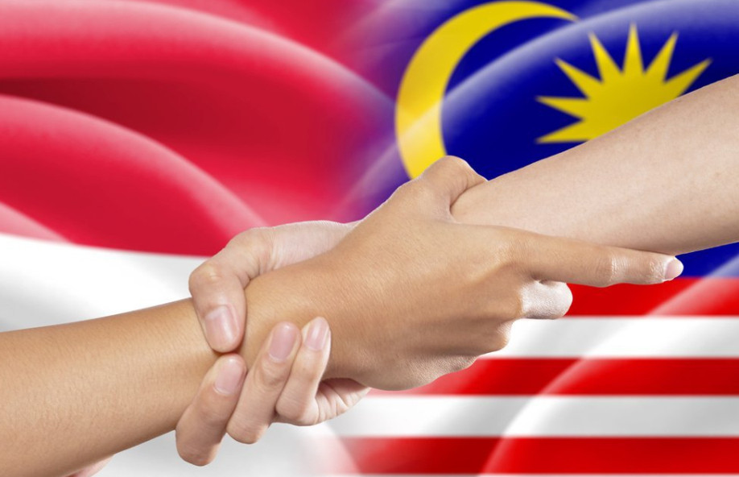
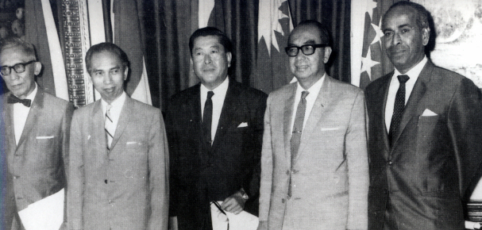
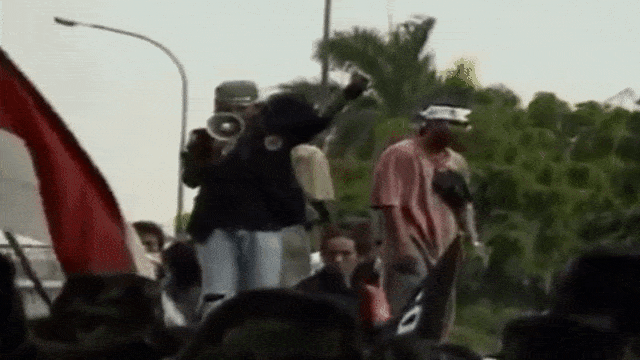
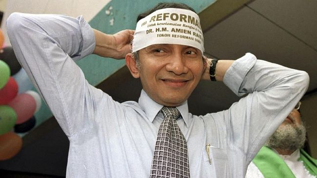
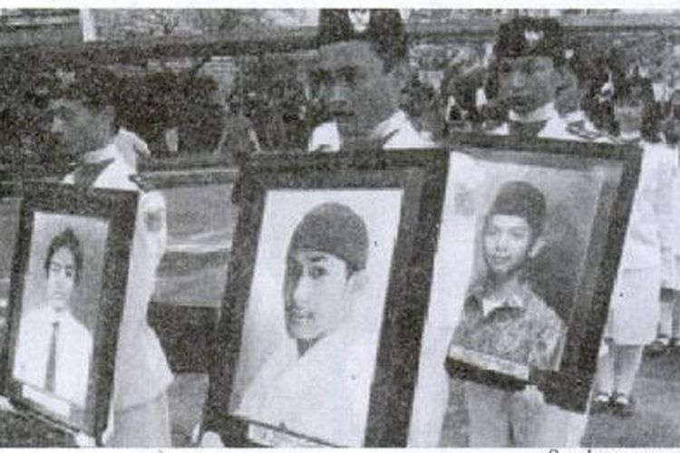

BAB III
Indonesia pada Masa Orde Baru
B. Perkembangan dan Proses Jatuhnya Masa Orde Baru
|
1. Perkembangan Politik pada Masa Orde Baru a. Indonesia kembali menjadi Anggota PBB Indonesia pertama kali bergabung dengan PBB sebagai anggota ke-60 pada 28 September 1950. Sejak itu, PBB banyak membantu Indonesia (seperti KTN, UNCI, dan UNTEA). Namun, pada 7 Januari 1965, Indonesia keluar dari PBB karena tidak setuju dengan Malaysia sebagai anggota tidak tetap Dewan Keamanan PBB. Sejak itu, hubungan internasional Indonesia dan pembangunan negara terganggu sehingga rakyat sengsara. Menyadari itu, pemerintah Orde Baru memasukkan Indonesia kembali dalam PBB sebagai anggota ke-60 pada 28 September 1966. Martabat RI kemudian terangkat, bahkan menteri luar Indonesia, Adam Malik terpilih sebagai Ketua Sidang Majelis Umum PBB pada 1974. b. Normalisasi Hubungan dengan Malaysia Hubungan yang tidak baik antara Indonesia dan Malaysia merugikan kedua negara sebagai negara tetangga. Sebab itu, pemerintah Orde Baru ingin melakukan normalisasi hubungan dengan Malaysia. Delegasi Indonesia (Menlu Adam Malik) dan Malaysia (PM Tun Abdul Razak) bertemu di Bangkok pada 29 Mei – 1 Juni 1966. Hasilnya adalah:
 Keinginan untuk bekerja sama dengan negara-negara tetangga mengakibatkan pembentukan Association of Southeast Asian Nations (ASEANS) pada 8 Agustus 1967 di Bangkok. Pelopornya adalah Indonesia (Adam Malik), Malaysia (Tun Abdul Razak), Filipina (Narciso Ramos), Singapura (Sinnathamby Rajaratnam), dan Thanat Khoman (Thailand). 
Pemerintah Orde Baru ingin menyusun sistem ketatanegaraan Indonesia berdasarkan demokrasi Pancasila. Salah satunya adalah dengan melaksanakan pemilu. Pemilu harus LUBER: langsung oleh rakyat, umum untuk segala warga RI, bebas untuk memilih tanpa paksaan, dan dilakukan secara rahasia. Pemilu seharusnya berlangsung sebelum 5 Juli 1968 tetapi dimundur karena kesulitan pembahasan UU pemilu. Pada Desember 1969, dua Rancangan Undang-Undang (RUU) telah disahkan:
Pemilu kedua dilakukan pada 2 Mei 1977 dan dilakukannya penyederhanaan kontestan menjadi tiga peserta, yaitu Partai Persatuan Pembangunan (PPP), Golongan Karya (Golkar), dan Partai Demokrasi Indonesia (PDI). Selama Masa Orde Baru (yang berlangsung selama 32 tahun), hanya terdapat enam kali pemilu. 2. Perkembangan Ekonomi pada Masa Orde Baru Di bawah Presiden Soekarno, Indonesia mengalami pertumbuhan perekonomian. Bangsa Indonesia melakukan pembangunan melalui pinjaman luar (seperti IMF, World Bank, IGGI) yang harus dibayar secara bertahap. Kebijakan mengenai ekonomi pun mulai dikeluarkan. Program pembangunan nasional dibagi ke dalam 3 langkah:
|
Namun, pembangunan ekonomi mengalami pemerosotan yang memprihatinkan sejak pertengahan tahun 1997. Indonesia terkena imbas krisis moneter (keuangan) yang menimpa dunia. Akibatnya, pertumbuhan ekonomi yang diperkirakan naik sebesar 4% per tahun menjadi 0%.
Di pasar mata uang, nilai rupiah telah mencapai Rp12.800 per US$ dan bahkan dalam perdagangan valuta asing nilainya sudah sampai Rp16.000 per US$.
Krisis moneter kemudian berkembang menjadi krisis ekonomi yang mempengaruhi masyarakat secara luas. Banyak perusahaan dan badan usaha bankrut; dan yang tidak, melakukan pemutusan hubungan kerja (PHK) sehingga meningkatnya angka pengangguran. Daya beli dan kualitas hidup rakyat menurun drastis. Persediaan sembilan bahan pokok (sembako) dalam negeri pun menipis dan harganya melonjak. Ini menyebabkan kemiskinan merajalela. 3. Proses Jatuhnya Masa Orde Baru Kekacauan ekonomi yang parah dan merugikan menimbulkan krisis kepercayaan masyarakat terhadap pemerintah Orde Baru. Pemerintah tentunya mencoba untuk mengatasi masalah ini. IMF mengulurkan bantuan keuangan secara bertahap senilai 23 miliar dolar, pemerintah melikuidasi 16 bank, dan diselenggarakan rapat antara menteri-menteri ekonomi. Pada 10 Maret 1998, Jenderal Soeharto terpilih kembali sebagai Presiden RI periode 1998-2003 untuk ketujuh kalinya. Empat hari kemudian, diumumkan penyusunan Kabinet Pembangunan VII. Keputusan yang dinilai penuh rekayasa dan nepotisme ini ditanggapi dengan berbagai protes oleh mahasiswa dan cendekiawan. Aksi-aksi tersebut mendapat peringatan keras dari Panglima ABRI, Jenderal Wiranto agar aksi-aksi tidak anarkis dan destruktif. 
Ia berani memaparkan berbagai kelemahan dan penyelewengan kekuasaan elit birokrasi Orde Baru. Ia juga berhasil menyadarkan masyarakat akan pentingnya pergantian kekuasaan pemerintahan Soeharto yang telah bercokol selama 32 tahun.  Dalam kondisi ini, pemerintah menaikkan harga BBM dan tarif listrik meski ditolak DPR. keadaan semakin tidak menentu dan aksi mahasiswa menuntut pengunduran diri Presiden Soeharto. Puncak gerakan ini adalah Tragedi Trisakti yang menewaskan empat mahasiswa Universitas Trisakti pada 12 Mei 1998, yaitu Elang Mulya Lesmana, Hery Hartanto, Hendriawan Sie, dan Hafidin Royan.  Melainkan, Presiden Soeharto bertemu dengan 9 tokoh masyarakat pada 19 Mei 1998 untuk membentuk Komite Reformasi yang diketuai dirinya. Selain perubahan kabinet, pemilu juga akan dipercepat dan Soeharto tidak akan mencalonkan dirinya menjadi presiden lagi. Rencana ini tidak mendapat dukungan dari sembilan tokoh tersebut. Bahkan 14 orang menteri Kabinet Pembangunan VII menolak tawaran duduk dalam Kabinet Reformasi. Tuntutan mahasiswa di berbagai kota besar untuk melakukan Sidang Istimewa (SI) MPR dan pencabutan mandat MPR kepada Presiden Soeharto semakin menguat. Akibatnya, pada 20 Mei 1998 terjadinya SI MPR, dan satu hari kemudian, Presiden Soeharto mengundurkan diri dari jabatan presiden. |